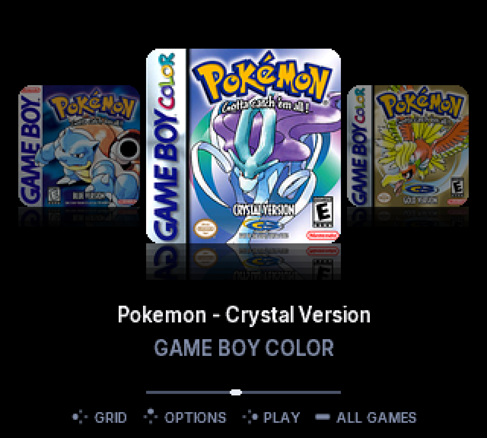
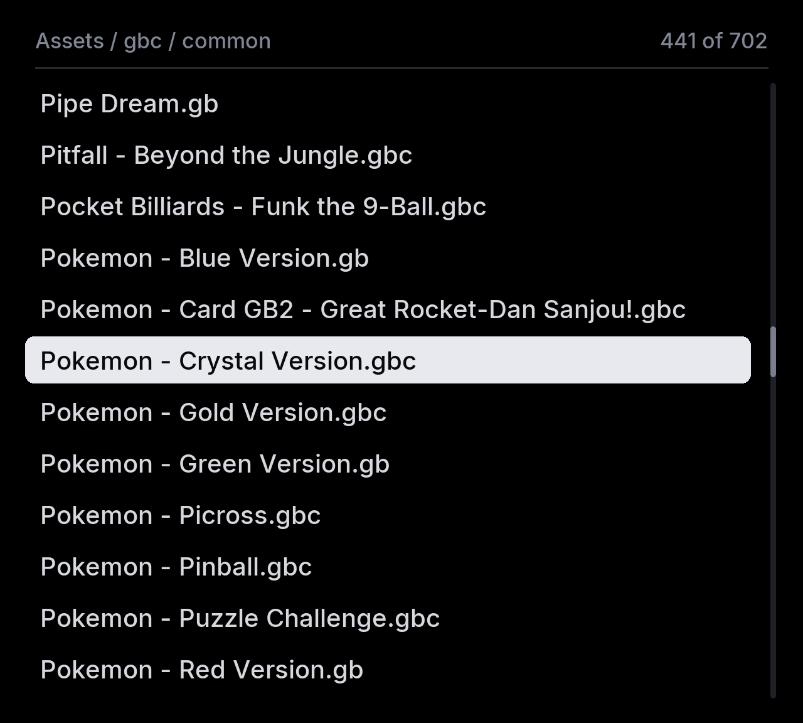
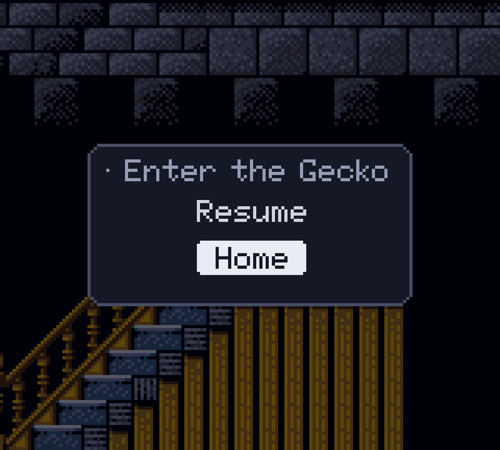
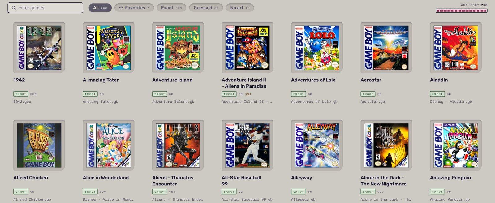

Star it on the Pocket.
Favorites change the moment you star them. Unstar one and its cover lifts out while the gap closes.
For Analogue Pocket
Vitrine replaces the Pocket's file list with your box art. Browse your covers, push in a cartridge, and pick up exactly where you left off.
Free and open source. Game Boy and Game Boy Color games.
Out of the box, every core on the Pocket opens on a list of files. Vitrine opens on your games.


Stock browser recreated for comparison. Vitrine shown frame for frame.
Browse
Full color covers with reflections, gliding at the Pocket's 60 frames a second. Press Y and the shelf becomes a grid of eight. L and R jump straight to a letter.
Cartridges
Vitrine reads the cartridge and drops its cover into place, lit in the colors of its own box art. Press A and the real cart plays, with the save on its own battery.

Resume
Vitrine writes your battery save and a suspend point, then returns you to your shelf. Pick the game again and it resumes on the exact frame you left.
Favorites change the moment you star them. Unstar one and its cover lifts out while the gap closes.


A legend on every screen draws the Pocket's own buttons, lit where it matters. It changes with what you are doing and never lists a button that does nothing.
2,047
A cache of 128 covers loads the ones you are about to see before you see them.
0
The emulation is the same accurate core you already use. Vitrine is the menu in front of it.
Setup
The Vitrine companion app does the work on your Mac.
It names every game by checksum, whatever the files are called.
Box art for every match. Click any cover to pick another or drop in your own.
Covers and games go to your SD card. Your saves are never touched.

Mac today. Windows and Linux are next.
Vitrine is being finished in the open. The first release is headed for the openFPGA cores inventory, so Pocket Sync and the other updaters can install it in one step.
No. Games run on the same MiSTer Gameboy core that budude2 brought to the Pocket. Vitrine only replaces the menu you pick them from.
Yes. Battery saves stay in the usual folder, so the ones you have keep working. The companion app never deletes or overwrites a save.
Not yet. Vitrine lives in the Game Boy and Game Boy Color core. Other systems would each need their own build.
Yes. It builds the cover pack the menu reads from your card. Without a pack, the core behaves like the stock one.
From your own collection. Vitrine ships no games, BIOS files or box art. The companion app fetches covers from the libretro thumbnails project.
Nothing. Vitrine is free and open source.